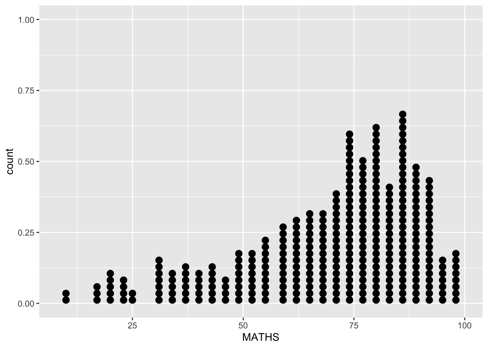
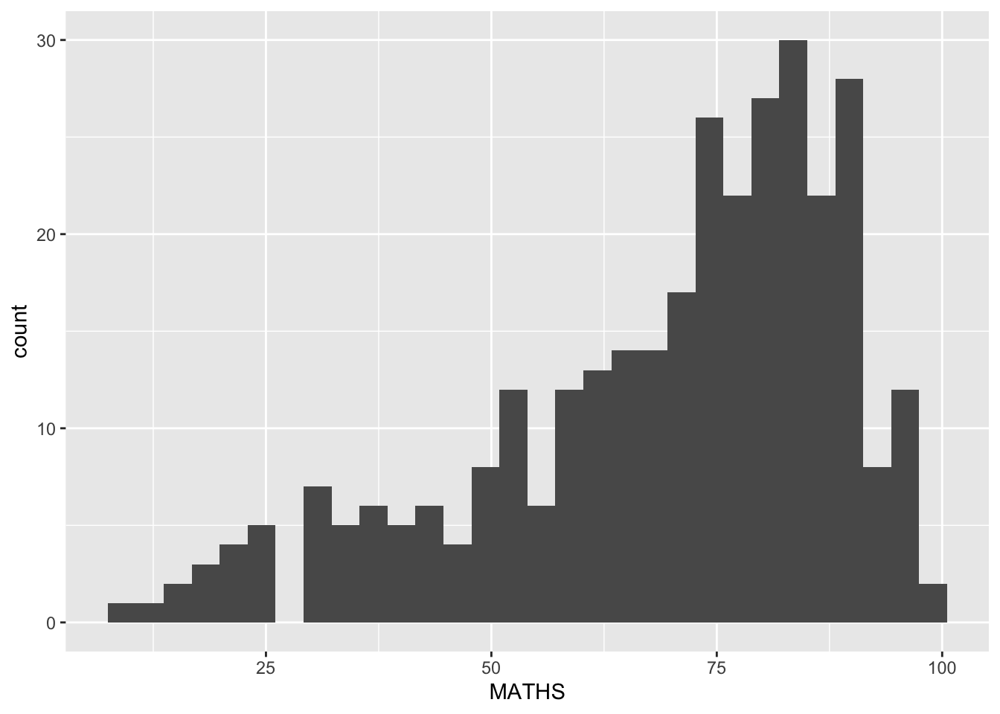
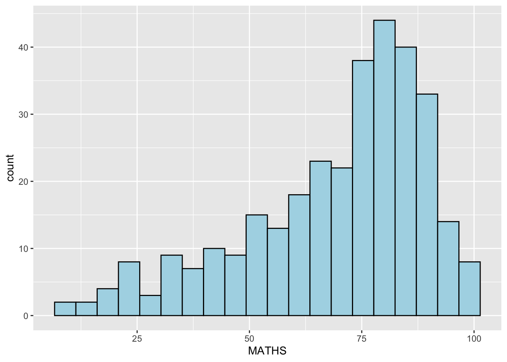
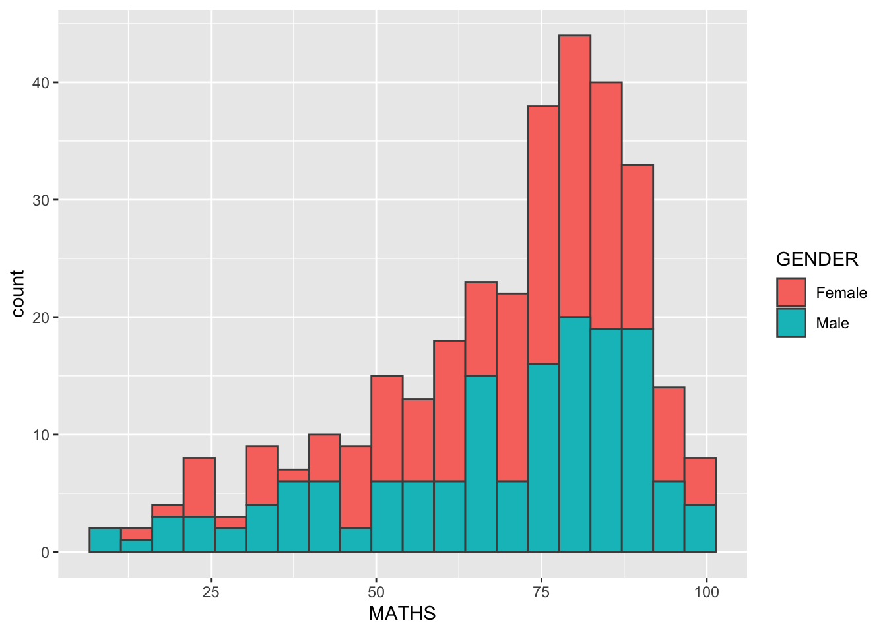
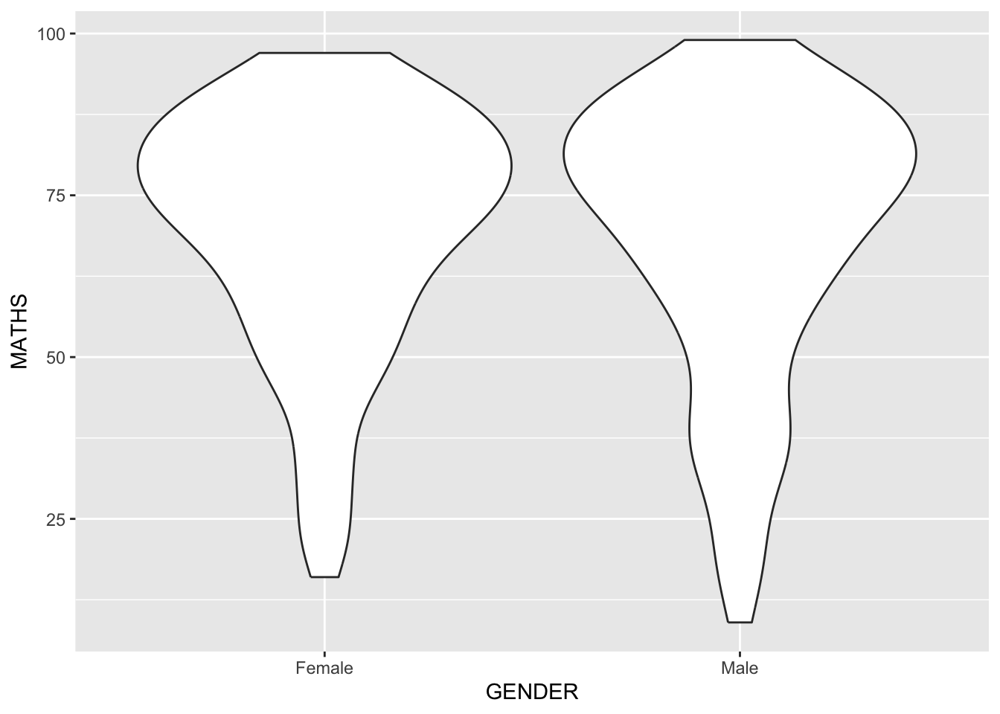
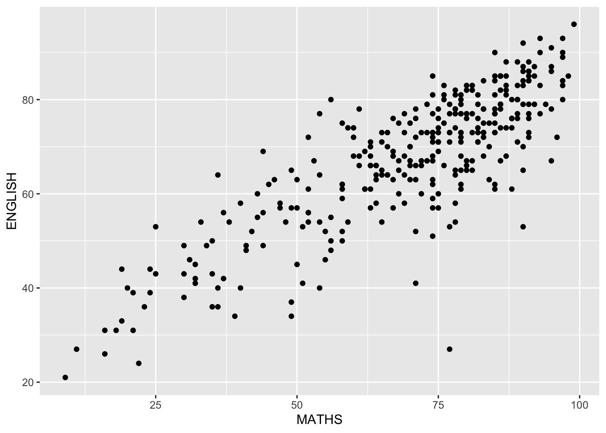
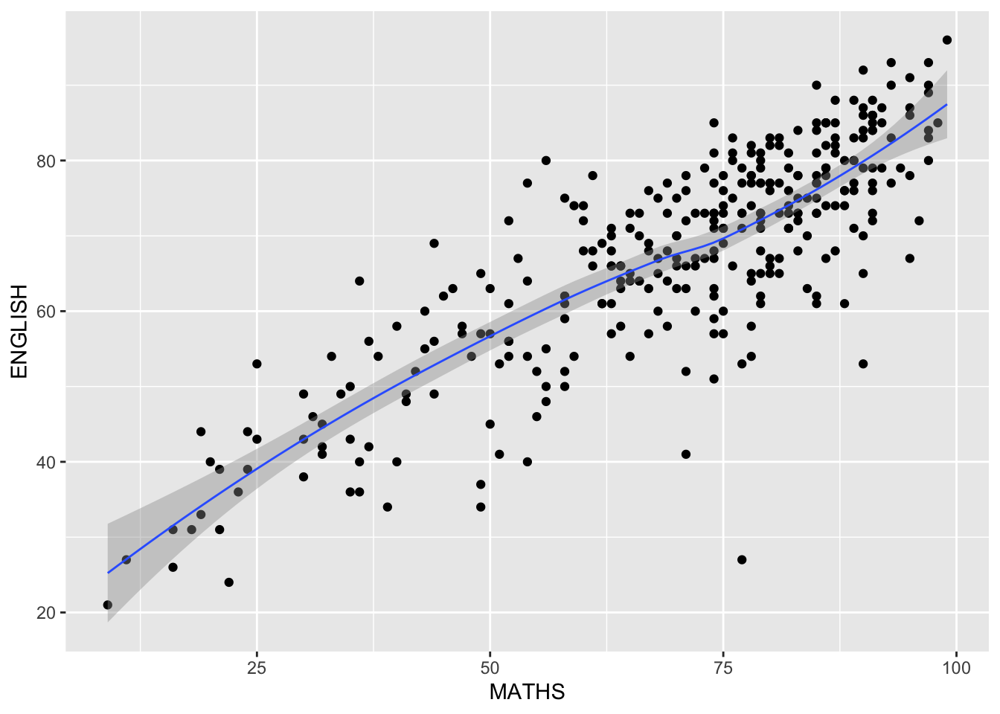

Rows: 322 Columns: 7
── Column specification ────────────────────────────────────────────────────────
Delimiter: ","
chr (4): ID, CLASS, GENDER, RACE
dbl (3): ENGLISH, MATHS, SCIENCE
ℹ Use `spec()` to retrieve the full column specification for this data.
ℹ Specify the column types or set `show_col_types = FALSE` to quiet this message.
hist(exam_data$MATHS)
Histogram of Maths scores
This code chunk creates a histogram for the variable MATHS in exam_data. It helps us understand the distribution of students’ maths scores. The argument bins = 10 groups the scores into 10 intervals. color = "black" sets the border color of each bar, and fill = "grey" sets the bar color. The title makes the chart easier to interpret.
ggplot2 is more flexible, consistent, and easier to extend than base R graphics. For simple plots, base R is often quicker, but as the visualization becomes more complex, ggplot2 makes it much easier to control aesthetics, add layers, apply themes, and produce cleaner, more professional-looking charts. It also follows a clear grammar of graphics structure, so the code is usually more systematic and easier to read, modify, and reuse.
1.5 Essential Grammatical Elements in ggplot2: data
ggplot(data = exam_data)
1.6 Essential Grammatical Elements in ggplot2: Aesthetic mappings
Code chunk below adds the aesthetic mapping into the plot.
ggplot(data = exam_data, aes(x = MATHS))
Explanation
This code chunk introduces the aesthetic mapping in ggplot2. The dataset used is exam_data, and the variable MATHS is mapped to the x-axis by using aes(x = MATHS). As a result, the plot now shows the x-axis and its label. However, no geometric layer is added yet, so the chart area is still empty.
1.7.1 Geometric Objects: geom_bar
Code chunk below adds a geometric object into the plot.
This code chunk creates a bar chart for the variable RACE. The dataset exam_data is first passed into ggplot(), and aes(x = RACE) maps the categorical variable RACE to the x-axis. The function geom_bar() then counts the number of observations in each category and displays them as bars. This makes it useful for showing the frequency distribution of a categorical variable.
Bin width defaults to 1/30 of the range of the data. Pick better value with
`binwidth`.

Explanation
This code chunk creates a dot plot for the variable MATHS. The dataset exam_data is passed into ggplot(), and aes(x = MATHS) maps the variable MATHS to the x-axis. The function geom_dotplot() represents each observation as a dot, making it useful for showing the distribution of a continuous variable. The argument dotsize = 0.5 reduces the size of the dots so that the plot looks clearer and less crowded.
Code chunk below adds a dot plot and adjusts the scale of the y-axis.
This code chunk creates a dot plot for the variable MATHS and further refines its appearance. The function geom_dotplot() displays each observation as a dot. The argument binwidth = 2.5 controls how the values are grouped along the x-axis, while dotsize = 0.5 makes the dots smaller and easier to read. The function scale_y_continuous(NULL, breaks = NULL) removes the y-axis title and tick marks, which makes the plot cleaner because the y-axis in a dot plot is usually not the main focus.
`stat_bin()` using `bins = 30`. Pick better value `binwidth`.

Explanation
This code chunk creates a histogram for the variable MATHS. The dataset exam_data is first passed into ggplot(), and aes(x = MATHS) maps the variable MATHS to the x-axis. The function geom_histogram() then groups the values of MATHS into intervals and displays their frequencies as bars. This makes it useful for showing the distribution of a continuous variable.
1.7.4 Modifying a geometric object by changing geom()
Code chunk below customizes the histogram by changing the number of bins and the bar appearance.
ggplot(data = exam_data, aes(x = MATHS)) +geom_histogram(bins =20, color ="black", fill ="lightblue")

Explanation
This code chunk creates a histogram for the variable MATHS and customizes its appearance. The function geom_histogram() groups the data into 20 bins, so the distribution can be shown in more detail. The argument color = "black" adds black borders to each bar, while fill = "lightblue" sets the bar color to light blue. These settings make the chart clearer and easier to interpret.
1.7.5 Modifying a geometric object by changing aes()
Code chunk below adds the fill aesthetic to the histogram.
ggplot(data = exam_data, aes(x = MATHS, fill = GENDER)) +geom_histogram(bins =20, color ="grey30")

Explanation
This code chunk creates a histogram of the variable MATHS and uses GENDER as the fill aesthetic. The variable MATHS is mapped to the x-axis, while GENDER is mapped to the fill color of the bars. As a result, the histogram shows how the distribution of maths scores differs by gender. The argument bins = 20 divides the data into 20 intervals, and color = "grey30" adds dark grey borders to the bars for clearer separation.
1.7.6 Geometric Objects: geom-density()
Code chunk below adds a density curve into the plot.
This code chunk creates a density plot for the variable MATHS. The dataset exam_data is passed into ggplot(), and aes(x = MATHS) maps the variable MATHS to the x-axis. The function geom_density() then draws a smoothed density curve to show the overall distribution of the maths scores. Compared with a histogram, a density plot provides a smoother view of the shape of the distribution.
Code chunk below adds the colour aesthetic to the density plot.
This code chunk creates a density plot for the variable MATHS and uses GENDER as the colour aesthetic. The variable MATHS is mapped to the x-axis, while GENDER is mapped to the line colour. As a result, separate density curves are drawn for each gender, allowing us to compare the distribution of maths scores between groups more clearly.
1.7.7 Geometric Objects: geom_boxplot
Code chunk below adds a boxplot into the plot.
ggplot(data = exam_data, aes(y = MATHS, x = GENDER)) +geom_boxplot()
Explanation
This code chunk creates a boxplot of MATHS grouped by GENDER. The variable GENDER is mapped to the x-axis, while MATHS is mapped to the y-axis. The function geom_boxplot() summarizes the distribution of maths scores for each gender by showing the median, quartiles, and potential outliers. This makes it useful for comparing the center and spread of scores across groups.
Code chunk below adds a boxplot with notches into the plot.
This code chunk creates a boxplot of MATHS grouped by GENDER and adds notches to the boxes. The variable GENDER is mapped to the x-axis, while MATHS is mapped to the y-axis. The function geom_boxplot() summarizes the distribution of maths scores for each gender by showing the median, quartiles, and possible outliers. The argument notch = TRUE adds a notch around the median, which provides a visual guide for comparing the medians between groups.
1.7.8 Geometric Objects: geom_violin
Code chunk below adds a violin plot into the plot.
ggplot(data = exam_data, aes(y = MATHS, x = GENDER)) +geom_violin()

Explanation
This code chunk creates a violin plot of MATHS grouped by GENDER. The variable GENDER is mapped to the x-axis, while MATHS is mapped to the y-axis. The function geom_violin() shows the distribution and density of maths scores for each gender. Compared with a boxplot, a violin plot provides more information about the shape of the distribution.
1.7.9 Geometric Objects: geom_point()
Code chunk below adds a scatter plot into the plot.
ggplot(data = exam_data, aes(x = MATHS, y = ENGLISH)) +geom_point()

Explanation
This code chunk creates a scatter plot using MATHS and ENGLISH. The variable MATHS is mapped to the x-axis, while ENGLISH is mapped to the y-axis. The function geom_point() plots each observation as a point. This type of chart is useful for examining the relationship between two numerical variables and identifying patterns, trends, or possible outliers.
1.7.10 geom objects can be combined
Code chunk below combines a boxplot with jittered points.
This code chunk creates a boxplot of MATHS grouped by GENDER and then adds individual data points on top of it. The variable GENDER is mapped to the x-axis, while MATHS is mapped to the y-axis. geom_boxplot() summarizes the distribution by showing the median, quartiles, and possible outliers. geom_point(position = "jitter", size = 0.5) adds the raw observations and slightly spreads them horizontally so that overlapping points can be seen more clearly. This makes the plot more informative because it shows both the summary statistics and the actual data values.
1.8 Essential Grammatical Elements in ggplot2: stat
1.8.1 Working with stat()
Code chunk below adds a boxplot into the plot.
ggplot(data = exam_data, aes(y = MATHS, x = GENDER)) +geom_boxplot()
Explanation
This code chunk creates a boxplot of MATHS grouped by GENDER. The variable GENDER is mapped to the x-axis, while MATHS is mapped to the y-axis. The function geom_boxplot() summarizes the distribution of maths scores for each gender by showing the median, quartiles, and possible outliers. This plot is useful for comparing the center and spread of scores across groups.
1.8.2 Working with stat - the stat_summary() method
Code chunk below adds a boxplot into the plot.
ggplot(data = exam_data, aes(y = MATHS, x = GENDER)) +geom_boxplot()
Explanation
This code chunk creates a boxplot of MATHS grouped by GENDER. The variable GENDER is mapped to the x-axis, while MATHS is mapped to the y-axis. The function geom_boxplot() summarizes the distribution of maths scores for each gender by showing the median, quartiles, and possible outliers. This plot is useful for comparing the center and spread of scores across groups.
1.8.3 Working with stat - the geom() method
Code chunk below adds a boxplot into the plot.
ggplot(data = exam_data, aes(y = MATHS, x = GENDER)) +geom_boxplot()
Explanation
This code chunk creates a boxplot of MATHS grouped by GENDER. The variable GENDER is mapped to the x-axis, while MATHS is mapped to the y-axis. The function geom_boxplot() summarizes the distribution of maths scores for each gender by showing the median, quartiles, and possible outliers. This plot is useful for comparing the center and spread of scores across groups.
1.8.4 Adding a best fit curve on a scatterplot
Code chunk below creates a scatter plot and adds a smoothing line.
Warning: Using `size` aesthetic for lines was deprecated in ggplot2 3.4.0.
ℹ Please use `linewidth` instead.
`geom_smooth()` using method = 'loess' and formula = 'y ~ x'

Explanation
geom_point() shows the individual observations, while geom_smooth() adds a smooth trend line. This helps us see the overall relationship between MATHS and ENGLISH more clearly.
Code chunk below creates a scatter plot and adds a linear regression line.
This code chunk creates a histogram of the variable MATHS and then uses facet_wrap(~ CLASS) to split the plot into separate panels according to CLASS. The variable MATHS is mapped to the x-axis, and geom_histogram(bins = 20) groups the scores into 20 bins to show their distribution. facet_wrap(~ CLASS) produces a separate histogram for each class, making it easier to compare the distribution of maths scores across different classes.
1.9.2 facet_grid() function
Code chunk below creates a histogram and splits it into separate panels by CLASS.
This code chunk creates a histogram of the variable MATHS and then uses facet_grid(~ CLASS) to divide the plot into separate panels according to CLASS. The variable MATHS is mapped to the x-axis, and geom_histogram(bins = 20) groups the maths scores into 20 bins to show their distribution. facet_grid(~ CLASS) produces one panel for each class, which makes it easier to compare the distribution of maths scores across different classes.
This code chunk creates a bar chart for the variable RACE. The dataset exam_data is first passed into ggplot(), and aes(x = RACE) maps the categorical variable RACE to the x-axis. The function geom_bar() then counts the number of observations in each category and displays them as bars. This makes it useful for showing the frequency distribution of a categorical variable.
Code chunk below creates a bar chart and flips the coordinates.
This code chunk creates a bar chart for the variable RACE and then flips the axes by using coord_flip(). The variable RACE is mapped to the x-axis, and geom_bar() counts the number of observations in each category and displays them as bars. coord_flip() switches the x-axis and y-axis, so the bars become horizontal instead of vertical. This is useful when category labels are long or when a horizontal bar chart is easier to read.
1.10.2 Changing the y- and x-axis range
Code chunk below creates a scatter plot and adds a linear regression line.
This code chunk creates a scatter plot using MATHS and ENGLISH, and then adds a fitted linear regression line. The variable MATHS is mapped to the x-axis, while ENGLISH is mapped to the y-axis. geom_point() plots each observation as a point, allowing us to see the relationship between the two variables. geom_smooth(method = lm, size = 0.5) fits a straight line based on a linear model and overlays it on the scatter plot. This helps us assess whether there is a linear relationship between maths and English scores.
Code chunk below creates a scatter plot with a linear regression line and limits the visible plotting range.
This code chunk creates a scatter plot using MATHS and ENGLISH, and then adds a fitted linear regression line. The variable MATHS is mapped to the x-axis, while ENGLISH is mapped to the y-axis. geom_point() plots each observation as a point, allowing us to examine the relationship between the two variables. geom_smooth(method = lm, size = 0.5) adds a straight regression line based on a linear model. coord_cartesian(xlim = c(0, 100), ylim = c(0, 100)) restricts the visible range of both axes to values between 0 and 100, making the plot focus on the score range more clearly.
1.11.1 Working with theme
Code chunk below creates a horizontal bar chart and applies the gray theme.
This code chunk creates a bar chart for the variable RACE, flips the coordinates, and applies a theme. The variable RACE is mapped to the x-axis, and geom_bar() counts the number of observations in each category and displays them as bars. coord_flip() switches the axes so that the bars become horizontal, which can improve readability. theme_gray() applies the default gray theme in ggplot2, which controls the overall appearance of the plot, including the background, grid lines, and text style.
Code chunk below creates a horizontal bar chart and applies the classic theme.
This code chunk creates a bar chart for the variable RACE, flips the coordinates, and applies a theme. The variable RACE is mapped to the x-axis, and geom_bar() counts the number of observations in each category and displays them as bars. coord_flip() switches the axes so that the bars become horizontal, which makes the chart easier to read. theme_classic() changes the overall appearance of the plot by removing the gray background and grid lines, giving the chart a cleaner and simpler style.
Code chunk below creates a horizontal bar chart and applies the minimal theme.
This code chunk creates a bar chart for the variable RACE, flips the coordinates, and applies a theme. The variable RACE is mapped to the x-axis, and geom_bar() counts the number of observations in each category and displays them as bars. coord_flip() switches the axes so that the bars become horizontal, which improves readability. theme_minimal() changes the overall appearance of the plot by using a clean and simple style with fewer visual distractions, making the chart look more modern and uncluttered.